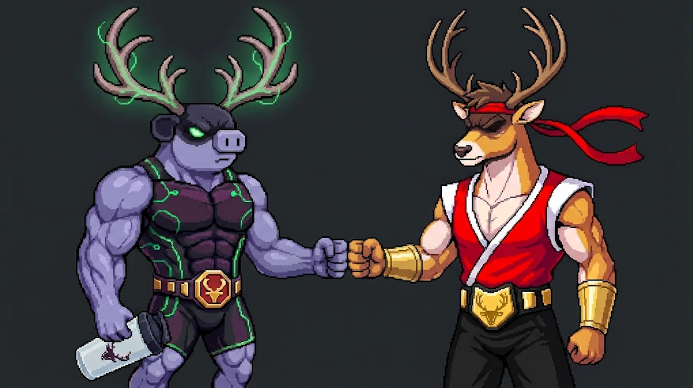

From a program PDF
to a daily habit.
A HyperWumpus companion for logging the next workout, repeating familiar meals, and seeing personal progress through an eight-week challenge.
See the workout experience ↗
One clear daily action
Open the prescribed workout. Record the set. Save the session.
Food without friction
Repeat meals, editable portions, barcode lookup, and a manual fallback.
Proof of consistency
Session history, strength records, private check-ins, and reusable challenge runs.
The proposed pilot
- One approved program: BAMF Builder.
- A small, opt-in participant cohort.
- Free core access funded by the partner.
- A defined pilot period and feedback sessions.
- Consent-based reporting with agreed metrics.
Measure active usage, repeat visits, logged sessions, ease of use, and support needs. The current build sends no analytics.
A paid product partnership
- Fixed development and pilot fee.
- Separate hosting and maintenance scope.
- Seasonal license for agreed programs.
- Content deliverables priced separately.
- Ambassador commissions handled separately.
Pricing follows agreed scope, participant volume, service responsibilities, and program/brand licensing. No price or commitment is implied.
Repeat the next season
A reviewed import workflow can turn approved program files into reusable workout templates. Participants archive each chapter and start again without losing their personal records.
Working today
- Workout and food logging
- Local personal progress and backups
- Reviewed JSON import in personal/demo
- Separate demo and participant experiences
Funded next phase
- Accounts and cloud persistence
- PDF extraction with human review
- Multi-program administration
- Partner reporting with participant consent
Free participant access, creator referral income.
Eligible product referrals
An optional ambassador store link and HYPER1 code connect interested participants with Bucked Up products. The app does not process purchases, verify purchase eligibility, or report commissions. Attribution and payouts remain with Bucked Up.
Ambassador disclosure: HyperWumpus may earn commission on eligible purchases. No commission amount or sale is guaranteed.Paid software and content scope
The proposed pilot fee, seasonal license, maintenance, and content deliverables are separate from referral commissions. Affiliate income does not automatically fund development or imply a software partnership.
The Bootcamp requirement permits qualifying retailer purchases; it does not require HyperWumpus attribution. Product-specific referral links can be added once supplied from the ambassador app.
Decision requested
Is there interest in a paid pilot? Confirm a sponsor, pilot scope, approval to distribute the program and use the concept artwork, and responsibility for participant support. Retain software ownership and license terms explicitly in the agreement.